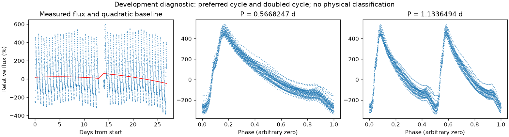
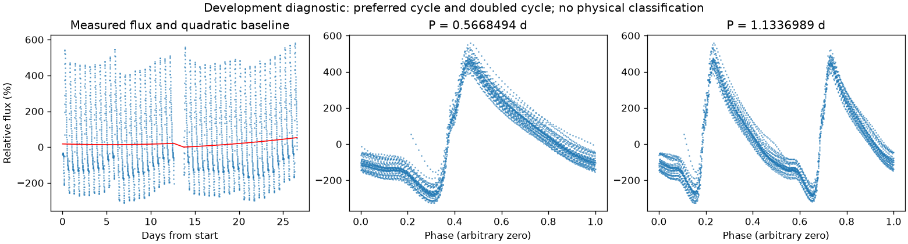

有重复信号，来源尚未充分检查
亮度重复周期约 0.56683706 天。这是优选亮度周期，未给出正式误差或物理分类。
第二版周期：0.5668246818909816 天；状态：preferred_lightcurve_cycle。

左图红线是缓慢基线；右面两图去除该基线。若未通过周期要求，两图只展示得分最高的竞争解释。
| 竞争周期（天） | 交替周期预测改善 | 两组各自改善 | 通过初筛 |
|---|---|---|---|
| 0.5668247 | 97.1% | 97.1% / 97.2% | 是 |
| 1.1336494 | 97.1% | 97.0% / 97.2% | 是 |
| 0.3796712 | 13.9% | 13.7% / 14.1% | 否 |
| 0.0943332 | -11.0% | -26.2% / -0.5% | 否 |
| 0.1415022 | -59.9% | -44.7% / -78.1% | 否 |
| 0.1886687 | -109.7% | -108.7% / -110.6% | 否 |
| 0.2834336 | -222.8% | -93.1% / -561.1% | 否 |
“预测改善”衡量用一组周期的形状预测另一组，比只有缓慢基线好多少；负数表示更差。搜索和预测共用了资料，因此这不是可信概率，也不是独立验证。
辅助数据检查：背景 SAP_BKG、指向修正 POS_CORR、亮斑中心 MOM_CENTR，或明确提供的仪器通道。
相关性只提示需要检查来源。恒星自身变暗也可能导致亮斑中心移动，不能据此断定是仪器。
第二版周期：0.5668494289145699 天；状态：preferred_lightcurve_cycle。

左图红线是缓慢基线；右面两图去除该基线。若未通过周期要求，两图只展示得分最高的竞争解释。
| 竞争周期（天） | 交替周期预测改善 | 两组各自改善 | 通过初筛 |
|---|---|---|---|
| 0.5668494 | 96.7% | 96.0% / 97.5% | 是 |
| 1.1337418 | 96.6% | 96.0% / 97.3% | 是 |
| 0.3773323 | 21.4% | 22.0% / 20.7% | 是 |
| 0.0945203 | -17.6% | -7.1% / -26.9% | 否 |
| 0.1414951 | -64.7% | -45.4% / -88.2% | 否 |
| 0.1886518 | -117.0% | -121.1% / -113.1% | 否 |
| 0.2834570 | -220.0% | -147.1% / -369.1% | 否 |
“预测改善”衡量用一组周期的形状预测另一组，比只有缓慢基线好多少；负数表示更差。搜索和预测共用了资料，因此这不是可信概率，也不是独立验证。
辅助数据检查：背景 SAP_BKG、指向修正 POS_CORR、亮斑中心 MOM_CENTR，或明确提供的仪器通道。
相关性只提示需要检查来源。恒星自身变暗也可能导致亮斑中心移动，不能据此断定是仪器。